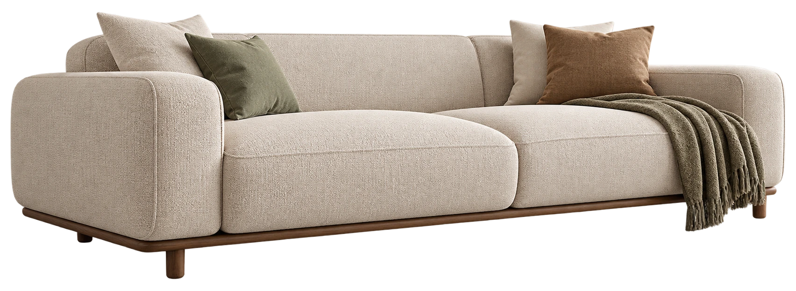
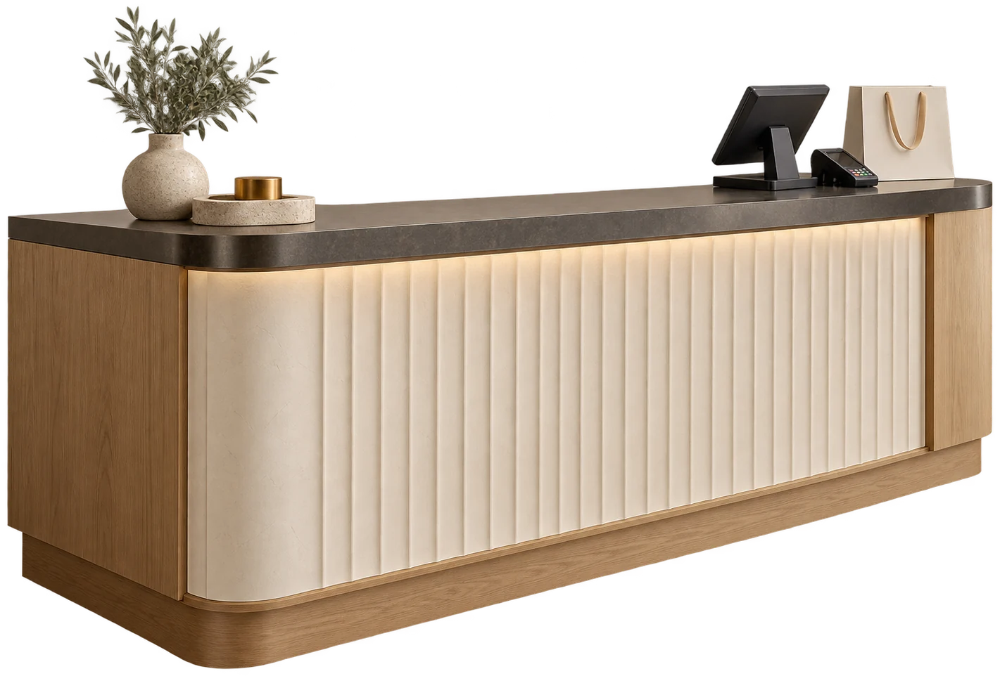

Chaque espace mérite sa touche.
Des murs intérieurs aux façades, nous prenons soin de votre espace avec des couleurs bien choisies et des finitions appliquées avec précision.
Parlons de votre projetIntérieurs
Un salon, une chambre ou une cuisine : la bonne teinte met en valeur les volumes et la lumière.
- Préparation et protection des surfaces
- Application soignée et finitions régulières

Extérieurs
Une façade doit être belle, mais aussi adaptée aux contraintes extérieures.
- Évaluation de l’état du support
- Mise en peinture des murs et façades
Finitions
Mat, velours ou effet minéral : la texture fait autant pour l’ambiance que la couleur.
- Conseil dans le choix des effets
- Application des effets et détails décoratifs
Rénovation
Avant la couleur, il faut parfois corriger le support. Nous donnons aux surfaces une base saine.
- Préparation, rebouchage et ponçage
- Reprise et mise en peinture des espaces
Commerces
Un accueil, une boutique, un bureau : une couleur cohérente contribue à rendre le lieu identifiable.
- Choix d’une palette adaptée au lieu
- Mise en valeur des espaces de passage

La finition
change le ton.
Essayez ces trois rendus graphiques. Le véritable résultat dépend toujours de la préparation du support, de la lumière et du produit appliqué.
Tester dans une pièceEt si on
changeait
tout ?
Une pièce à rafraîchir, une façade à reprendre, une nouvelle ambiance à imaginer ? Chaque projet commence par une conversation.
Parlons de votre projet